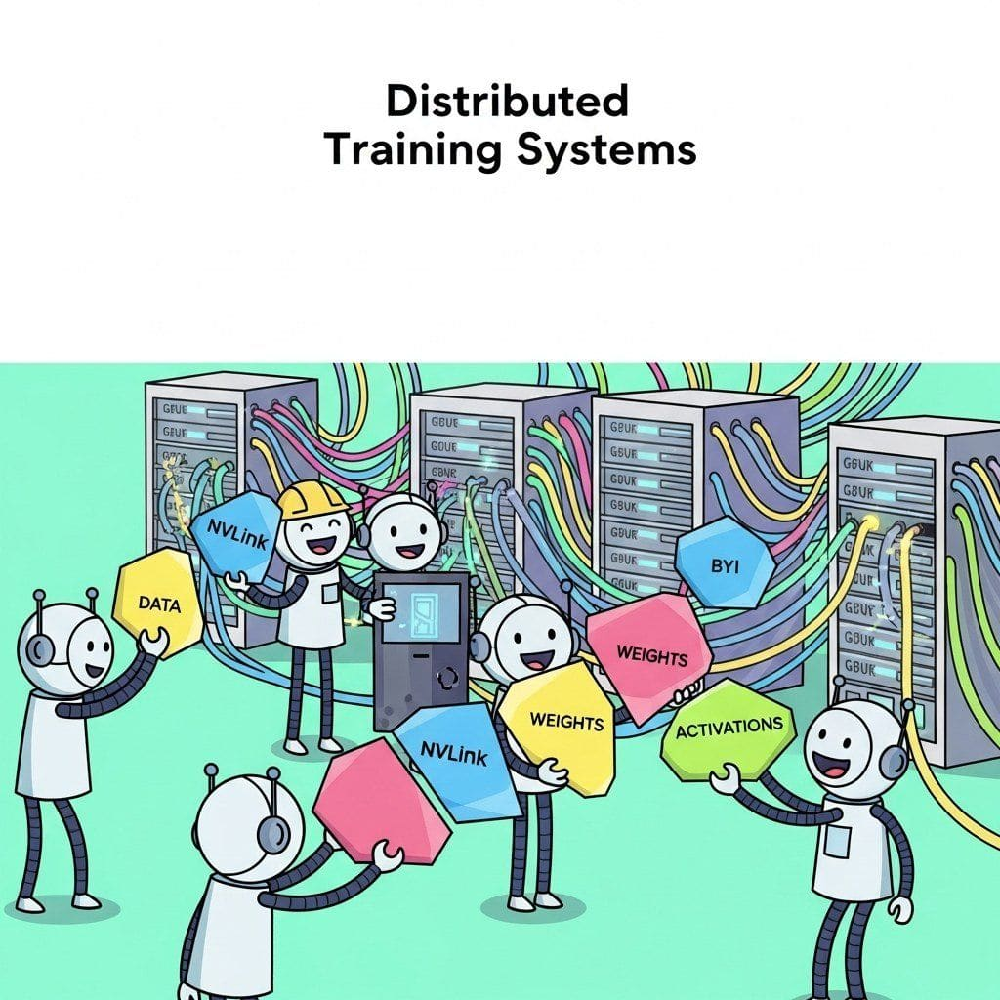

Frontier LLMs are trained on clusters of thousands of accelerators. This chapter covers the three orthogonal axes of parallelism (data, tensor, pipeline) and the algorithms that ride on each: ZeRO and FSDP shard data-parallel state so that a 70B model fits on 80 GB GPUs; Megatron-LM partitions a single matrix multiplication across an NVLink-connected node; 1F1B and zero-bubble pipelines move activations between stages with bounded idle time; 3D parallelism composes all three. Section 59.5 then turns to the operational reality of running a 30-day training job across 1000+ GPUs without losing a week to a single failed checkpoint: sharded async checkpoints, elastic schedulers, MFU dashboards, and the public post-mortems from OPT-175B, BLOOM, and Llama-3 that turned each lesson into industry practice.
Sections in This Chapter
- 59.1 Distributed Training Fundamentals The three axes of parallelism (data, model, tensor), NCCL collective primitives, the NVLink and InfiniBand interconnect hierarchy, and the BSP synchronization model that underlies every training run.
- 59.2 ZeRO and FSDP: Memory-Efficient Data Parallelism Stages 1, 2, 3 of optimizer / gradient / parameter sharding; the PyTorch FSDP API and wrapping policies; ZeRO++ and Hybrid-Shard; per-rank memory arithmetic for 70B and 405B models.
- 59.3 Megatron-LM and Tensor Parallelism Column-parallel and row-parallel matmul, attention-head sharding, sequence parallelism via reduce-scatter + all-gather, and the NVLink-fanout upper bound on tensor-parallel degree.
- 59.4 Pipeline Parallelism and Hybrid Strategies GPipe, 1F1B, interleaved virtual stages, zero-bubble pipelines, and the 3D-parallelism recipe (TP × PP × DP) used by every frontier-scale run from BLOOM to Llama-3.
- 59.5 Production Training Infrastructure Sharded async checkpointing with optimal cadence, elastic schedulers (TorchElastic, SkyPilot, MosaicML), MFU dashboards and NCCL flame graphs, and real-world post-mortems from OPT-175B, BLOOM, and Llama-3 405B.